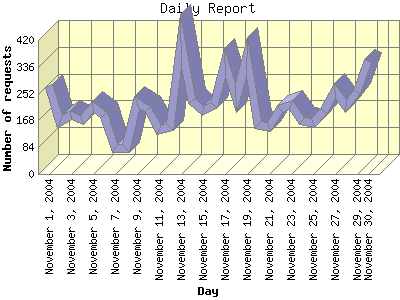

Report generated by Analog 5.91beta1 and Report Magic 2.21
|
Web Server Statistics for "Harish Narayanan (hnarayan) - November 2004" Report generated by Analog 5.91beta1 and Report Magic 2.21 |
The Daily Report identifies the activity for each day within the reporting period. Remember that one page hit can result in several server requests as the images for each page are loaded.

| Day | Number of requests | Number of bytes transferred | Percentage of the bytes | Percentage of the requests | |
|---|---|---|---|---|---|
| 1. | November 1, 2004 | 276 | 7.559 MB | 2.23% | 4.31% |
| 2. | November 2, 2004 | 164 | 2.922 MB | 0.86% | 2.56% |
| 3. | November 3, 2004 | 186 | 8.779 MB | 2.59% | 2.90% |
| 4. | November 4, 2004 | 170 | 3.434 MB | 1.01% | 2.65% |
| 5. | November 5, 2004 | 209 | 4.166 MB | 1.23% | 3.26% |
| 6. | November 6, 2004 | 184 | 4.291 MB | 1.27% | 2.87% |
| 7. | November 7, 2004 | 81 | 815.131 KB | 0.23% | 1.26% |
| 8. | November 8, 2004 | 82 | 1.974 MB | 0.58% | 1.28% |
| 9. | November 9, 2004 | 224 | 10.800 MB | 3.19% | 3.50% |
| 10. | November 10, 2004 | 204 | 14.522 MB | 4.29% | 3.19% |
| 11. | November 11, 2004 | 137 | 14.890 MB | 4.40% | 2.14% |
| 12. | November 12, 2004 | 148 | 10.577 MB | 3.12% | 2.31% |
| 13. | November 13, 2004 | 417 | 59.203 MB | 17.49% | 6.51% |
| 14. | November 14, 2004 | 228 | 10.282 MB | 3.04% | 3.56% |
| 15. | November 15, 2004 | 197 | 8.259 MB | 2.44% | 3.08% |
| 16. | November 16, 2004 | 215 | 9.325 MB | 2.75% | 3.36% |
| 17. | November 17, 2004 | 348 | 13.323 MB | 3.94% | 5.43% |
| 18. | November 18, 2004 | 237 | 10.961 MB | 3.24% | 3.70% |
| 19. | November 19, 2004 | 368 | 8.901 MB | 2.63% | 5.75% |
| 20. | November 20, 2004 | 154 | 5.272 MB | 1.56% | 2.40% |
| 21. | November 21, 2004 | 147 | 5.504 MB | 1.63% | 2.30% |
| 22. | November 22, 2004 | 204 | 7.293 MB | 2.15% | 3.19% |
| 23. | November 23, 2004 | 215 | 20.986 MB | 6.20% | 3.36% |
| 24. | November 24, 2004 | 166 | 8.160 MB | 2.41% | 2.59% |
| 25. | November 25, 2004 | 160 | 6.508 MB | 1.92% | 2.50% |
| 26. | November 26, 2004 | 196 | 16.932 MB | 5.00% | 3.06% |
| 27. | November 27, 2004 | 261 | 16.528 MB | 4.88% | 4.08% |
| 28. | November 28, 2004 | 213 | 17.022 MB | 5.03% | 3.33% |
| 29. | November 29, 2004 | 258 | 11.803 MB | 3.49% | 4.03% |
| 30. | November 30, 2004 | 354 | 17.438 MB | 5.15% | 5.53% |
Most active day November 13, 2004 : 131 pages sent. 417 requests handled. 62,078,581.00 served.
Daily average: 213 requests handled. 11.280 MB served.
This report was generated on December 6, 2004 13:47.
Report time frame November 1, 2004 00:58 to November 30, 2004 23:50.
| Web statistics report produced by: | |
 Analog 5.91beta1 Analog 5.91beta1 |  Report Magic 2.21 Report Magic 2.21 |